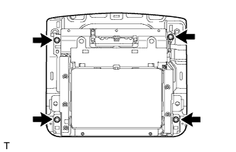
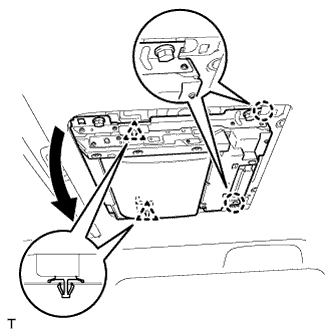
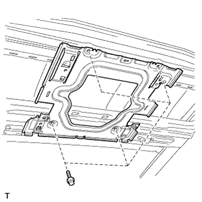

ТЕЛЕВИЗИОННЫЙ ДИСПЛЕЙ > СНЯТИЕ |
| 1. ОТСОЕДИНИТЕ ПРОВОД ОТ ОТРИЦАТЕЛЬНОГО ВЫВОДА АККУМУЛЯТОРНОЙ БАТАРЕИ |
| 2. СНИМИТЕ ОСНОВАНИЕ ТЕЛЕВИЗИОННОГО ДИСПЛЕЯ |
 |
С помощью съемника молдингов освободите 6 захватов и 4 фиксатора и снимите основание телевизионного дисплея.
| 3. СНИМИТЕ ТЕЛЕВИЗИОННЫЙ ДИСПЛЕЙ В СБОРЕ |
Отсоедините разъемы.
|  |
Отверните 4 болта.
|  |
Отсоедините 2 фиксатора и переместите телевизионный дисплей, как показано на рисунке, чтобы расцепить 2 захвата и снять его.
| 4. СНИМИТЕ ОБИВКУ КРЫШИ В СБОРЕ |
Снимите обивку крыши (Нажмите здесь).
| 5. СНИМИТЕ КРОНШТЕЙН ТЕЛЕВИЗИОННОГО ДИСПЛЕЯ |
|  |
Выверните 4 болта и снимите кронштейн.